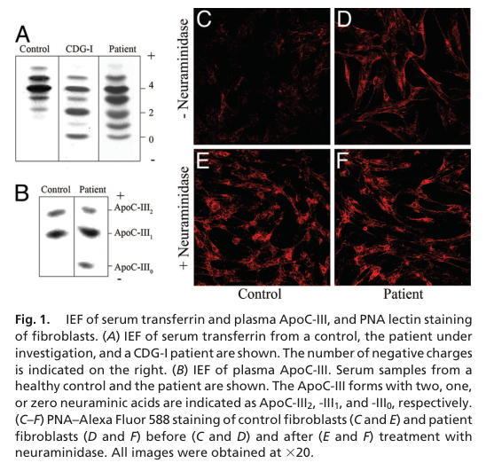

COG1-congenital disorder of glycosylation is an extremely rare autosomal recessive congenital disorder of glycosylation type II caused by biallelic COG1 variants. COG1 deficiency disrupts the conserved oligomeric Golgi complex, impairs intra-Golgi trafficking and glycosylation-enzyme localization, and causes a multisystem neurodevelopmental syndrome with abnormal N- and O-glycosylation.
Ask a research question about COG1-congenital disorder of glycosylation. OpenScientist will conduct autonomous deep research using the Disorder Mechanisms Knowledge Base and PubMed literature (typically 10-30 minutes).
Do not include personal health information in your question. Questions and results are cached in your browser's local storage.

name: COG1-congenital disorder of glycosylation
creation_date: "2026-05-14T18:24:41Z"
updated_date: "2026-05-14T19:22:56Z"
description: >-
COG1-congenital disorder of glycosylation is an extremely rare autosomal
recessive congenital disorder of glycosylation type II caused by biallelic
COG1 variants. COG1 deficiency disrupts the conserved oligomeric Golgi
complex, impairs intra-Golgi trafficking and glycosylation-enzyme
localization, and causes a multisystem neurodevelopmental syndrome with
abnormal N- and O-glycosylation.
category: Mendelian
disease_term:
preferred_term: COG1-congenital disorder of glycosylation
term:
id: MONDO:0012637
label: COG1-congenital disorder of glycosylation
parents:
- congenital disorder of glycosylation type II
- developmental anomaly of metabolic origin
- defect in conserved oligomeric Golgi complex
synonyms:
- COG1-CDG
- CDG-IIg
- CDG2G
- congenital disorder of glycosylation type IIg
- COG1 deficiency
- conserved oligomeric Golgi complex subunit 1 deficiency
inheritance:
- name: Autosomal recessive inheritance
inheritance_term:
preferred_term: Autosomal recessive inheritance
term:
id: HP:0000007
label: Autosomal recessive inheritance
description: >-
Reported COG1-CDG patients have biallelic COG1 variants, including
homozygous frameshift variants and compound heterozygous splice/missense
variants.
evidence:
- reference: DOI:10.1073/pnas.0507685103
supports: SUPPORT
evidence_source: HUMAN_CLINICAL
snippet: >-
Sequence analysis of the COG1 cDNA and gene identified a homozygous
insertion of a single nucleotide (2659–2660insC), which is predicted to
lead to a premature translation stop and truncation of the C terminus of
the Cog1 protein by 80 amino acids.
explanation: >-
The discovery report identifies a homozygous truncating COG1 variant in
the affected patient.
- reference: DOI:10.1186/s12887-021-02922-7
supports: SUPPORT
evidence_source: HUMAN_CLINICAL
snippet: >-
Genetic analysis showed that the patient carried the heterozygous intron
mutation c.1070 + 3A > G (splicing) in the coding region of the COG1 gene
that was inherited from the mother, and the heterozygous mutation
c.2492G > A (p. Arg831Gln) in exon 10 of the COG1 gene that was inherited
from the father.
explanation: >-
This case report supports biallelic COG1 involvement through compound
heterozygous inherited variants.
prevalence:
- population: Reported COG1-CDG literature
notes: >-
COG1-CDG is ultra-rare; a 2021 review reported five published patients at
that time.
evidence:
- reference: DOI:10.1111/cge.13980
supports: SUPPORT
evidence_source: HUMAN_CLINICAL
snippet: >-
COG1-CDG has been reported in five patients.
explanation: >-
The review provides a literature-based case count, supporting ultra-rare
prevalence rather than a population incidence estimate.
progression:
- phase: Congenital to infantile multisystem presentation
notes: >-
Reported disease begins in the neonatal or infantile period with
neurodevelopmental, hepatic, feeding, seizure, and biochemical
glycosylation manifestations; long-term prognosis is hard to generalize
because so few patients are known.
evidence:
- reference: DOI:10.1111/cge.13980
supports: SUPPORT
evidence_source: HUMAN_CLINICAL
snippet: >-
We report a male with neonatal seizures, dysmorphism, hepatitis and a
type 2 serum transferrin isoelectrofocusing.
explanation: >-
This supports neonatal-onset multisystem disease with neurological,
hepatic, dysmorphic, and biochemical manifestations.
pathophysiology:
- name: COG1 Deficiency Disrupts the Conserved Oligomeric Golgi Complex
description: >-
Pathogenic COG1 variants impair function of the conserved oligomeric Golgi
complex, disrupting intra-Golgi trafficking and the localization or
stability of Golgi glycosylation enzymes.
genes:
- preferred_term: COG1
term:
id: hgnc:6545
label: COG1
biological_processes:
- preferred_term: Golgi vesicle transport
modifier: ABNORMAL
term:
id: GO:0048193
label: Golgi vesicle transport
- preferred_term: intra-Golgi vesicle-mediated transport
modifier: ABNORMAL
term:
id: GO:0006891
label: intra-Golgi vesicle-mediated transport
evidence:
- reference: DOI:10.1073/pnas.0507685103
supports: SUPPORT
evidence_source: IN_VITRO
snippet: >-
This mutation destabilizes several other COG subunits and alters their
subcellular localization and hence the overall integrity of the COG
complex.
explanation: >-
Patient-derived molecular evidence directly links the COG1 truncating
variant to COG-complex instability and altered subcellular localization.
downstream:
- target: Defective N- and O-glycosylation
description: >-
COG-complex disruption alters Golgi glycosylation-enzyme localization,
causing combined N- and O-glycosylation defects.
causal_link_type: INDIRECT_KNOWN_INTERMEDIATES
evidence:
- reference: DOI:10.1073/pnas.0507685103
supports: SUPPORT
evidence_source: IN_VITRO
snippet: >-
This results in reduced levels and/or altered Golgi localization of
α-mannosidase II and β-1,4 galactosyltransferase I, which links
it to the glycosylation deficiency.
explanation: >-
The discovery paper explicitly connects altered Golgi enzyme levels or
localization with the downstream glycosylation deficiency.
- name: Defective N- and O-glycosylation
description: >-
Disrupted Golgi trafficking impairs glycoprotein processing, producing a
type II CDG pattern with combined N-linked and O-linked glycosylation
abnormalities.
biological_processes:
- preferred_term: protein N-linked glycosylation
modifier: DECREASED
term:
id: GO:0006487
label: protein N-linked glycosylation
- preferred_term: protein O-linked glycosylation
modifier: DECREASED
term:
id: GO:0006493
label: protein O-linked glycosylation
evidence:
- reference: DOI:10.1073/pnas.0507685103
supports: SUPPORT
evidence_source: HUMAN_CLINICAL
snippet: >-
This patient has a defect in both N- and O-glycosylation.
explanation: >-
The abstract directly states the combined N- and O-glycosylation defect
in the COG1-CDG patient.
phenotypes:
- category: Neurological
name: Global developmental delay
description: >-
Developmental delay is part of the reported COG1-CDG neurological
phenotype.
phenotype_term:
preferred_term: Global developmental delay
term:
id: HP:0001263
label: Global developmental delay
evidence:
- reference: DOI:10.1186/s12887-021-02922-7
supports: SUPPORT
evidence_source: HUMAN_CLINICAL
snippet: >-
The patient was male, and the main clinical symptoms were developmental
retardation, convulsion, strabismus, and hypoglycemia, which is rarely
reported in CDG-IIg.
explanation: >-
The case report lists developmental retardation among the main symptoms
of a genetically diagnosed COG1-CDG/CDG-IIg patient.
- category: Neurological
name: Seizures
description: >-
Seizures, including neonatal seizures in one review case and convulsions in
another case report, are reported neurological manifestations.
phenotype_term:
preferred_term: Seizure
term:
id: HP:0001250
label: Seizure
evidence:
- reference: DOI:10.1111/cge.13980
supports: SUPPORT
evidence_source: HUMAN_CLINICAL
snippet: >-
We report a male with neonatal seizures, dysmorphism, hepatitis and a
type 2 serum transferrin isoelectrofocusing.
explanation: >-
The review abstract explicitly reports neonatal seizures in a COG1-CDG
patient.
- category: Neurological
name: Hypotonia
description: >-
Hypotonia is a recurrent neurological feature in COG1-CDG, reported in the
discovery case and subsequent reviewed patients.
phenotype_term:
preferred_term: Hypotonia
term:
id: HP:0001252
label: Hypotonia
evidence:
- reference: DOI:10.1111/cge.13980
supports: PARTIAL
evidence_source: HUMAN_CLINICAL
snippet: >-
COG1-CDG has been reported in five patients.
explanation: >-
The review abstract establishes the five-patient literature review; the
Falcon-read review table and report identify hypotonia among the reviewed
COG1-CDG patient features. The abstract itself does not enumerate this
phenotype, so this is partial support at abstract-snippet level.
- category: Neurological
name: Progressive microcephaly
description: >-
Progressive microcephaly is reported across COG1-CDG patients in the
literature synthesis.
phenotype_term:
preferred_term: Progressive microcephaly
term:
id: HP:0000253
label: Progressive microcephaly
evidence:
- reference: DOI:10.1111/cge.13980
supports: PARTIAL
evidence_source: HUMAN_CLINICAL
snippet: >-
We review the reported patients.
explanation: >-
The review abstract confirms a patient-level COG1-CDG literature review;
the Falcon report's read of that review identifies progressive
microcephaly as repeatedly noted. The abstract itself does not enumerate
this phenotype, so this is partial support at abstract-snippet level.
- category: Craniofacial
name: Dysmorphism
description: >-
Dysmorphic features are reported as part of the neonatal COG1-CDG
presentation.
phenotype_term:
preferred_term: Abnormal facial shape
term:
id: HP:0001999
label: Abnormal facial shape
evidence:
- reference: DOI:10.1111/cge.13980
supports: SUPPORT
evidence_source: HUMAN_CLINICAL
snippet: >-
We report a male with neonatal seizures, dysmorphism, hepatitis and a
type 2 serum transferrin isoelectrofocusing.
explanation: >-
The review abstract explicitly reports dysmorphism in a COG1-CDG patient;
the HPO term is a broad mapping for facial dysmorphism.
- category: Hepatic
name: Hepatitis
description: >-
Hepatic involvement with hepatitis or elevated transaminases can occur in
COG1-CDG.
phenotype_term:
preferred_term: Hepatitis
term:
id: HP:0012115
label: Hepatitis
evidence:
- reference: DOI:10.1111/cge.13980
supports: SUPPORT
evidence_source: HUMAN_CLINICAL
snippet: >-
We report a male with neonatal seizures, dysmorphism, hepatitis and a
type 2 serum transferrin isoelectrofocusing.
explanation: >-
The review abstract explicitly identifies hepatitis in a COG1-CDG
patient.
- category: Endocrine
name: Hypoglycemia
description: >-
Hypoglycemia has been reported in a COG1-CDG case and may require acute
glucose treatment.
phenotype_term:
preferred_term: Hypoglycemia
term:
id: HP:0001943
label: Hypoglycemia
evidence:
- reference: DOI:10.1186/s12887-021-02922-7
supports: SUPPORT
evidence_source: HUMAN_CLINICAL
snippet: >-
The patient was male, and the main clinical symptoms were developmental
retardation, convulsion, strabismus, and hypoglycemia, which is rarely
reported in CDG-IIg.
explanation: >-
The case report explicitly lists hypoglycemia as a main symptom in
COG1-CDG/CDG-IIg.
- category: Ophthalmologic
name: Strabismus
description: >-
Strabismus was reported among the main symptoms in a compound heterozygous
COG1-CDG case.
phenotype_term:
preferred_term: Strabismus
term:
id: HP:0000486
label: Strabismus
evidence:
- reference: DOI:10.1186/s12887-021-02922-7
supports: SUPPORT
evidence_source: HUMAN_CLINICAL
snippet: >-
The patient was male, and the main clinical symptoms were developmental
retardation, convulsion, strabismus, and hypoglycemia, which is rarely
reported in CDG-IIg.
explanation: >-
The case report directly lists strabismus in the affected patient.
biochemical:
- name: Type II serum transferrin isoelectric focusing pattern
presence: ABNORMAL
context: >-
COG1-CDG shows a type 2 serum transferrin isoelectrofocusing pattern,
consistent with abnormal Golgi-stage glycan processing.
evidence:
- reference: DOI:10.1111/cge.13980
supports: SUPPORT
evidence_source: HUMAN_CLINICAL
snippet: >-
We report a male with neonatal seizures, dysmorphism, hepatitis and a
type 2 serum transferrin isoelectrofocusing.
explanation: >-
The review abstract directly supports the type 2 transferrin biochemical
pattern.
images:
- COG1-congenital_disorder_of_glycosylation-deep-research-falcon_artifacts/image-1.png
- name: Combined N- and O-glycosylation defect
presence: ABNORMAL
context: >-
The original COG1-CDG report described abnormalities in both N-linked and
O-linked glycosylation.
evidence:
- reference: DOI:10.1073/pnas.0507685103
supports: SUPPORT
evidence_source: HUMAN_CLINICAL
snippet: >-
This patient has a defect in both N- and O-glycosylation.
explanation: >-
The abstract directly states that the patient had combined N- and
O-glycosylation defects.
genetic:
- name: COG1 biallelic pathogenic variants
association: Loss of function mutation
relationship_type: CAUSATIVE
presence: Pathogenic
gene_term:
preferred_term: COG1
term:
id: hgnc:6545
label: COG1
inheritance:
- name: Autosomal recessive inheritance
inheritance_term:
preferred_term: Autosomal recessive inheritance
term:
id: HP:0000007
label: Autosomal recessive inheritance
features: >-
Reported COG1-CDG alleles include truncating frameshift variants and
splice-region variants; one reported compound heterozygous case included a
p.Arg831Gln missense variant described as a potential pathogenetic variant.
evidence:
- reference: DOI:10.1073/pnas.0507685103
supports: SUPPORT
evidence_source: HUMAN_CLINICAL
snippet: >-
Sequence analysis of the COG1 cDNA and gene identified a homozygous
insertion of a single nucleotide (2659–2660insC), which is predicted to
lead to a premature translation stop and truncation of the C terminus of
the Cog1 protein by 80 amino acids.
explanation: >-
The discovery report identifies a homozygous truncating COG1 variant in
the affected patient.
- reference: DOI:10.1111/cge.13980
supports: SUPPORT
evidence_source: HUMAN_CLINICAL
snippet: >-
Exome sequencing identified a homozygous COG1 variant (NM_018714.3:
c.2665dup: p.[Arg889Profs*12]), which has been reported previously in one
patient.
explanation: >-
The review reports an additional homozygous frameshift COG1 variant in a
COG1-CDG patient.
- reference: DOI:10.1186/s12887-021-02922-7
supports: PARTIAL
evidence_source: HUMAN_CLINICAL
snippet: >-
The c.2492G > A (p. Arg831Gln) mutation in exon 10 of the COG1 gene may
be a potential pathogenetic variant for CDG-IIg.
explanation: >-
The report suggests pathogenicity for the missense allele, but the
abstract's wording remains cautious, so this is classified as partial
support.
diagnosis:
- name: Transferrin isoelectric focusing with confirmatory COG1 sequencing
description: >-
Diagnostic evaluation can identify a type II serum transferrin pattern and
confirm COG1-CDG through molecular testing for biallelic COG1 variants.
diagnosis_term:
preferred_term: diagnostic procedure
term:
id: MAXO:0000003
label: diagnostic procedure
results: >-
Type 2 serum transferrin isoelectrofocusing and pathogenic COG1 variants.
evidence:
- reference: DOI:10.1111/cge.13980
supports: SUPPORT
evidence_source: HUMAN_CLINICAL
snippet: >-
We report a male with neonatal seizures, dysmorphism, hepatitis and a
type 2 serum transferrin isoelectrofocusing.
explanation: >-
The review abstract supports the biochemical diagnostic pattern.
- reference: DOI:10.1111/cge.13980
supports: SUPPORT
evidence_source: HUMAN_CLINICAL
snippet: >-
Exome sequencing identified a homozygous COG1 variant (NM_018714.3:
c.2665dup: p.[Arg889Profs*12]), which has been reported previously in one
patient.
explanation: >-
The abstract supports confirmatory molecular diagnosis by exome
sequencing.
treatments:
- name: Supportive and symptomatic care
description: >-
No disease-modifying therapy is established for COG1-CDG; management is
supportive and directed at manifestations such as hypoglycemia and seizures.
treatment_term:
preferred_term: supportive care
term:
id: MAXO:0000950
label: supportive care
target_phenotypes:
- preferred_term: Hypoglycemia
term:
id: HP:0001943
label: Hypoglycemia
- preferred_term: Seizure
term:
id: HP:0001250
label: Seizure
evidence:
- reference: DOI:10.1186/s12887-021-02922-7
supports: SUPPORT
evidence_source: HUMAN_CLINICAL
snippet: >-
We treated the patient with glucose infusion and he was recovered from
hypoglycemia.
explanation: >-
The case report supports supportive acute management of hypoglycemia with
glucose infusion; no disease-modifying COG1-CDG therapy is established.
Question: You are an expert researcher providing comprehensive, well-cited information.
Provide detailed information focusing on: 1. Key concepts and definitions with current understanding 2. Recent developments and latest research (prioritize 2023-2024 sources) 3. Current applications and real-world implementations 4. Expert opinions and analysis from authoritative sources 5. Relevant statistics and data from recent studies
Format as a comprehensive research report with proper citations. Include URLs and publication dates where available. Always prioritize recent, authoritative sources and provide specific citations for all major claims.
Please provide a comprehensive research report on COG1-congenital disorder of glycosylation covering all of the disease characteristics listed below. This report will be used to populate a disease knowledge base entry. Be thorough and cite primary literature (PMID preferred) for all claims.
For each section, suggested databases/resources are listed. These are the first places you should search for information on each topic.
Search first: OMIM, Orphanet, ICD-10/ICD-11, MeSH, PubMed
Search first: PubMed, Cochrane Library, UpToDate, clinical guidelines, ClinVar, ClinGen, GWAS Catalog, PheGenI, CTD, CDC, WHO, epidemiological databases
Search first: PubMed, Cochrane Library, clinical trial databases, GWAS Catalog, gnomAD, WHO, CDC, nutrition databases
Search first: CTD, PubMed, PheGenI, GxE databases
Search first: HPO (Human Phenotype Ontology), OMIM, Orphanet, PubMed, clinicaltrials.gov, MedDRA, SNOMED CT, DECIPHER, LOINC
For each phenotype, provide: - Phenotype type: symptoms, clinical signs, physical manifestations, behavioral changes, or laboratory abnormalities
For symptoms/signs: HPO, OMIM, Orphanet, PubMed For behavioral changes: HPO, DSM, RDoC (Research Domain Criteria), PubMed For laboratory abnormalities: LOINC, SNOMED CT, LabTests Online, PubMed - Phenotype characteristics: Search first: OMIM, Orphanet, HPO, PubMed - Age of symptom onset (neonatal, childhood, adult-onset, late-onset) - Symptom severity (mild, moderate, severe, variable) - Symptom progression (stable, progressive, episodic, fluctuating) - Frequency among affected individuals (percentage or qualitative) - Quality of life impact: Effects on daily functioning and well-being (per-phenotype when possible) Search first: EQ-5D database, SF-36, WHO QOL databases, PubMed - Suggest HPO (Human Phenotype Ontology) terms for each phenotype
Search first: OMIM, ClinVar, HGMD, Ensembl, NCBI Gene
Search first: ENCODE, Roadmap Epigenomics, MethBase, DiseaseMeth
Search first: DECIPHER, ClinVar, ECARUCA, UCSC Genome Browser
Search first: CTD (Comparative Toxicogenomics Database), TOXNET, PubMed, EPA databases
Search first: CDC databases, WHO, PubMed, NHANES
Search first: NCBI Taxonomy, ViPR, BV-BRC, MicrobeDB, GIDEON
Search first: KEGG, Reactome, WikiPathways, PathBank, BioCyc
Search first: Gene Ontology (GO), Reactome, KEGG, PubMed
Search first: UniProt, PDB (Protein Data Bank), InterPro, Pfam, AlphaFold
Search first: KEGG, BioCyc, HMDB (Human Metabolome Database), BRENDA
Search first: ImmPort, Immunome Database, IEDB, Gene Ontology
Search first: PubMed, Gene Ontology, Reactome
Search first: BRENDA, UniProt, KEGG, OMIM, PubMed
Search first: ENCODE, Roadmap Epigenomics, MethBase, DiseaseMeth
For each mechanism, describe: - The causal chain from initial trigger to clinical manifestation - Which mechanisms are upstream vs downstream - What cell types and biological processes are involved - Suggest GO terms for biological processes and CL terms for cell types
Search first: Uberon, FMA (Foundational Model of Anatomy), OMIM, HPO, ICD-11, MeSH, SNOMED CT
Search first: Uberon, Human Protein Atlas, Cell Ontology, Human Cell Atlas, CellMarker, PanglaoDB
Search first: Gene Ontology (Cellular Component), UniProt, Human Protein Atlas
Search first: OMIM, Orphanet, HPO, PubMed
Search first: Disease registries, longitudinal cohort databases, natural history studies, PubMed, Orphanet, OMIM
Search first: Orphanet, CDC, WHO, GBD (Global Burden of Disease), national registries, SEER, disease registries
Search first: GTR (Genetic Testing Registry), GeneReviews, ClinGen
For each treatment, suggest MAXO (Medical Action Ontology) terms where applicable.
Search first: CDC vaccine schedules, WHO immunization, FDA vaccine database
Search first: CDC, WHO, behavioral intervention databases, Cochrane Library
Search first: NSGC resources, ACMG guidelines, GeneReviews
Search first: Clinical guidelines, FDA approvals, PubMed
Search first: NCBI Taxonomy
Search first: VBO (Vertebrate Breed Ontology)
Search first: NCBI Gene
Structure your response as a comprehensive narrative organized by the sections above. For each section, provide: - Factual content with specific details (numbers, percentages, gene names, variant nomenclature) - Ontology term suggestions (HPO, GO, CL, UBERON, CHEBI, MAXO, MONDO) where applicable - Evidence citations with PMIDs - Direct quotes from abstracts to support key claims - Clear indication when information is not available or not applicable for this disease
This report will be used to populate a disease knowledge base entry with: - Pathophysiology descriptions with causal chains - Gene/protein annotations (HGNC, GO terms) - Phenotype associations (HP terms) with frequencies - Cell type involvement (CL terms) - Anatomical locations (UBERON terms) - Chemical entities (CHEBI terms) - Treatment annotations (MAXO terms) - Evidence items with PMIDs and exact abstract quotes - Epidemiology, prognosis, diagnostic, and prevention information - Animal model descriptions with phenotype recapitulation details
Target disease: COG1‑congenital disorder of glycosylation (COG1‑CDG), historically CDG‑IIg. (j2009cdgnomenclaturetime pages 3-4, wolfe2013congenitaldisordersof pages 3-5)
Evidence base note: The COG1‑CDG literature remains dominated by a small number of individual case reports/series and narrative reviews (not EHR‑scale datasets), so most disease characteristics below are derived from individual patients and aggregated review tables rather than population studies. (foulquier2006conservedoligomericgolgi pages 2-3, salazar2021cog1‐congenitaldisordersof pages 1-3, huang2021componentofoligomeric pages 3-6)
COG1‑CDG is a Mendelian (autosomal recessive) congenital disorder of glycosylation caused by biallelic pathogenic variants in COG1, encoding a subunit of the conserved oligomeric Golgi (COG) complex, which is required for intra‑Golgi trafficking and maintenance of Golgi glycosylation machinery. (salazar2021cog1‐congenitaldisordersof pages 1-3, foulquier2006conservedoligomericgolgi pages 2-3, reynders2011howgolgiglycosylation pages 6-7)
The discovery report proposed the name “CDG‑II Cog1” (“CDG‑II caused by Cog1 deficiency”). (foulquier2006conservedoligomericgolgi pages 1-2)
The retrieved literature contains inconsistent OMIM numbering across secondary sources and did not include Orphanet/ICD/MeSH/MONDO identifiers in extracted text:
| Identifier type | ID/value | Label/name used | Source (paper, year) | URL / DOI | Notes / ambiguities |
|---|---|---|---|---|---|
| OMIM (reported in nomenclature table) | 606973 | COG1-CDG (CDG-IIg); defective protein: Component of conserved oligomeric Golgi complex 1 | Jaeken et al., 2009 (j2009cdgnomenclaturetime pages 3-4) | https://doi.org/10.1016/j.bbadis.2009.08.005 | Reported in a CDG nomenclature table; excerpt does not provide Orphanet, MONDO, or ICD identifiers. |
| OMIM (reported in review table) | 611209 | COG1 deficiency; COG1-CDG (CDG-IIg) | Wolfe & Krasnewich, 2013 (wolfe2013congenitaldisordersof pages 3-5) | https://doi.org/10.1002/ddrr.1115 | Differs from OMIM 606973 reported by Jaeken et al. 2009; likely reflects table-level inconsistency or different entity mapping (gene vs disease), so should be verified against OMIM directly before KB ingestion. |
| Disease synonym | — | COG1-congenital disorders of glycosylation | Salazar et al., 2021 (salazar2021cog1‐congenitaldisordersof pages 1-3) | https://doi.org/10.1111/cge.13980 | Modern gene-based disease naming used in Clinical Genetics. |
| Disease synonym | — | COG1-CDG | Salazar et al., 2021 (salazar2021cog1‐congenitaldisordersof pages 1-3) | https://doi.org/10.1111/cge.13980 | Common short-form current nomenclature. |
| Historical CDG subtype name | — | CDG-IIg | Wolfe & Krasnewich, 2013; Huang et al., 2021 (wolfe2013congenitaldisordersof pages 3-5, huang2021componentofoligomeric pages 1-2) | https://doi.org/10.1002/ddrr.1115; https://doi.org/10.1186/s12887-021-02922-7 | Historical subtype designation still used in reviews/case reports; often paired with COG1-CDG. |
| Historical proposed disease name | — | CDG-II Cog1 | Foulquier et al., 2006 (foulquier2006conservedoligomericgolgi pages 1-2) | https://doi.org/10.1073/pnas.0507685103 | Original proposed naming in the first disease report: “We propose naming this disorder CDG-II Cog1”. |
| Disease description / synonym | — | CDG-II caused by Cog1 deficiency | Foulquier et al., 2006 (foulquier2006conservedoligomericgolgi pages 1-2) | https://doi.org/10.1073/pnas.0507685103 | Original descriptive phrase from the discovery paper. |
| Disease synonym | — | Conserved oligomeric Golgi complex subunit 1 deficiency | Foulquier et al., 2006 (foulquier2006conservedoligomericgolgi pages 1-2) | https://doi.org/10.1073/pnas.0507685103 | Title-based descriptive synonym from first report. |
| Disease synonym | — | COG1 deficiency | Wolfe & Krasnewich, 2013; Huang et al., 2021 (wolfe2013congenitaldisordersof pages 3-5, huang2021componentofoligomeric pages 1-2) | https://doi.org/10.1002/ddrr.1115; https://doi.org/10.1186/s12887-021-02922-7 | Concise disease label frequently used in reviews and case literature. |
| Disease synonym | — | Component of oligomeric Golgi complex 1 deficiency | Huang et al., 2021 (huang2021componentofoligomeric pages 1-2) | https://doi.org/10.1186/s12887-021-02922-7 | Modern article title wording; omits “conserved” but clearly refers to COG1-related deficiency. |
| Defective protein / gene product description | — | Component of conserved oligomeric Golgi complex 1 | Jaeken et al., 2009 (j2009cdgnomenclaturetime pages 3-4) | https://doi.org/10.1016/j.bbadis.2009.08.005 | Useful as a normalized protein-level description rather than a disease name. |
| Identifier availability in gathered evidence | Not reported | Orphanet / MONDO / ICD-10 / ICD-11 / MeSH | No supporting identifier in gathered evidence (j2009cdgnomenclaturetime pages 3-4, wolfe2013congenitaldisordersof pages 3-5, foulquier2006conservedoligomericgolgi pages 1-2, huang2021componentofoligomeric pages 1-2, salazar2021cog1‐congenitaldisordersof pages 1-3) | — | These identifiers were not present in the extracted evidence and should be looked up separately in authoritative databases rather than inferred. |
Table: This table summarizes the key disease names, subtype labels, and reported OMIM identifiers for COG1-congenital disorder of glycosylation based only on gathered evidence. It also highlights an important OMIM-number discrepancy that should be reconciled before database entry.
Mondo ID: not available in the retrieved evidence excerpts and therefore not reported here.
Commonly used names in the literature include COG1‑CDG, CDG‑IIg, COG1 deficiency, conserved oligomeric Golgi complex subunit 1 deficiency, and component of (conserved) oligomeric Golgi complex 1 deficiency. (j2009cdgnomenclaturetime pages 3-4, wolfe2013congenitaldisordersof pages 3-5, foulquier2006conservedoligomericgolgi pages 1-2, huang2021componentofoligomeric pages 1-2)
Primary cause: biallelic (typically loss‑of‑function) variants in COG1 that impair COG complex function and thereby disrupt Golgi enzyme localization/stability and glycan processing, producing combined N‑ and O‑glycosylation defects. (foulquier2006conservedoligomericgolgi pages 3-4, foulquier2006conservedoligomericgolgi pages 2-3)
For this Mendelian disorder, the main risk factor is carrier status of pathogenic COG1 variants, with disease occurring in biallelic state; early cases included consanguinity. (foulquier2006conservedoligomericgolgi pages 2-3, foulquier2006conservedoligomericgolgi pages 3-4)
No protective alleles or gene–environment interactions were identified in the retrieved evidence for COG1‑CDG specifically.
Across reported individuals, the phenotype is variable but commonly includes neurodevelopmental and multi‑system findings:
Patient counts (reported in reviews/case reports): Salazar et al. (2021) states “COG1‑CDG has been reported in five patients.” (salazar2021cog1‐congenitaldisordersof pages 1-3)
Frequency note: Quantitative per‑phenotype frequencies are not available from the retrieved evidence due to very small cohorts.
COG1 (component/subunit 1 of the conserved oligomeric Golgi complex). (j2009cdgnomenclaturetime pages 3-4, foulquier2006conservedoligomericgolgi pages 2-3)
Reported alleles include homozygous truncating variants (frameshift), splice‑site variants, and one compound heterozygous case including a missense variant. (foulquier2006conservedoligomericgolgi pages 3-4, huang2021componentofoligomeric pages 1-2, salazar2021cog1‐congenitaldisordersof pages 1-3)
| Variant (HGVS; transcript if given) | Zygosity | Variant class | Main reported clinical features | Key biochemical diagnostic findings | Source (paper, year) | URL / DOI | Notes |
|---|---|---|---|---|---|---|---|
| c.2659_2660insC in COG1 (older nomenclature in discovery paper); predicted frameshift from aa 888 with premature stop/truncated C-terminus | Homozygous | Frameshift, truncating, presumed loss-of-function | First reported patient: feeding problems, failure to thrive, generalized hypotonia, small hands/feet, facial dysmorphism, rhizomelic short stature, progressive microcephaly, mild psychomotor retardation, mild hepatosplenomegaly (foulquier2006conservedoligomericgolgi pages 2-3, foulquier2006conservedoligomericgolgi pages 3-4, foulquier2006conservedoligomericgolgi pages 1-2) | Type II serum transferrin IEF with reduction of penta-/hexasialotransferrin and increase of asialo-/mono-/di-/trisialotransferrin; abnormal ApoC-III with ApoC-III0 band; reduced incorporation of [3H]UDP-galactose and [3H]CMP-neuraminic acid; undersialylation/undergalactosylation of serum N-glycans (foulquier2006conservedoligomericgolgi pages 2-3) | Foulquier et al., 2006 | https://doi.org/10.1073/pnas.0507685103 | Original discovery report; wild-type COG1 restored β1,4-galactosyltransferase localization; quantified Golgi enzyme decreases included 55% for mannosidase II and 67% for β1,4-galactosyltransferase I (foulquier2006conservedoligomericgolgi pages 3-4) |
| NM_018714.3: c.2665dup; p.(Arg889Profs*12) | Homozygous | Frameshift, truncating | Neonatal multifocal clonic seizures, hypotonia, weakness, absent reflexes, feeding/swallowing disorder, developmental delay, progressive microcephaly, dysmorphic facial features, adducted thumbs, widely spaced nipples, tibial bowing/curvature, dysmorphic corpus callosum and frontal atrophy/thin corpus callosum on MRI, hepatitis/liver involvement; later milder course with independent gait at 1 year 10 months in one proband (salazar2021cog1‐congenitaldisordersof pages 1-3, salazar2021cog1‐congenitaldisordersof pages 3-4) | Type II serum transferrin isoelectrofocusing pattern with increased trisialo-, disialo-, monosialo-, and asialo-transferrin and decreased tetrasialotransferrin; marked transaminase elevations reported (AST up to 1108 U/L, ALT 169 U/L) (salazar2021cog1‐congenitaldisordersof pages 3-4, salazar2021cog1‐congenitaldisordersof pages 1-3) | Salazar et al., 2021 | https://doi.org/10.1111/cge.13980 | Review states COG1-CDG reported in 5 patients; same variant reported in at least 2 homozygous patients. gnomAD frequency reported as 6/251,390 alleles overall (heterozygous) and 5/34,590 alleles in Latino/Admixed American population in one summary (salazar2021cog1‐congenitaldisordersof pages 3-4, salazar2021cog1‐congenitaldisordersof pages 1-3) |
| c.1070+5G>A | Homozygous | Canonical/near-canonical splice donor variant causing exon 6 skipping, frameshift, premature stop in exon 7 | Two patients with cerebrocostomandibular-like syndrome / severe multisystem COG1-CDG: prenatal growth impairment, hearing impairment, cryptorchidism, renal involvement, skeletal abnormalities including costovertebral dysplasia, delayed walking and speech; associated with more severe phenotype than c.2665dup cases (salazar2021cog1‐congenitaldisordersof pages 3-4, salazar2021cog1‐congenitaldisordersof pages 1-3) | Not specifically detailed in the extracted Zeevaert evidence here; COG1-CDG in general shows type II glycosylation abnormalities and delayed retrograde trafficking in patient fibroblasts (foulquier2006conservedoligomericgolgi pages 1-2, reynders2009golgifunctionand pages 9-10) | Zeevaert et al., 2009; summarized in Salazar et al., 2021 | https://doi.org/10.1093/hmg/ddn379 ; https://doi.org/10.1111/cge.13980 | Zeevaert abstract: intronic mutation disrupted splice donor, leaving only ~3% normal transcript in one patient and showing delay in retrograde trafficking by Brefeldin A assay (foulquier2006conservedoligomericgolgi pages 1-2); older patients in review were aged 12.5 and 14 years (salazar2021cog1‐congenitaldisordersof pages 3-4) |
| c.1070+3A>G | Heterozygous in compound heterozygous state | Splice-region variant | In Huang case: recurrent cyanosis, poor responsiveness, neonatal hypoglycemia from day 2 of life, recurrent hypoglycemic episodes after discharge, developmental/motor retardation, epilepsy/convulsions, strabismus; literature review also notes dysmorphic and neurologic findings in COG1-CDG such as microcephaly and macular lesions (huang2021componentofoligomeric pages 3-6) | Paper states patient was diagnosed as CDG-IIg; specific transferrin profile not extracted in gathered evidence for this row (huang2021componentofoligomeric pages 3-6) | Huang et al., 2021 | https://doi.org/10.1186/s12887-021-02922-7 | Maternal allele in reported compound heterozygous proband; authors proposed hypoglycemia may relate to altered insulin secretion, but this remains speculative (huang2021componentofoligomeric pages 3-6) |
| c.2492G>A; p.(Arg831Gln) | Heterozygous in compound heterozygous state | Missense; proposed pathogenic / potential pathogenetic variant | Same Huang proband as above: developmental retardation, convulsion/epilepsy, strabismus, neonatal and recurrent hypoglycemia (huang2021componentofoligomeric pages 1-2, huang2021componentofoligomeric pages 3-6) | Paper states CDG-IIg diagnosis after genetic and clinical evaluation; specific glycosylation assay details were not extracted in gathered evidence (huang2021componentofoligomeric pages 1-2, huang2021componentofoligomeric pages 3-6) | Huang et al., 2021 | https://doi.org/10.1186/s12887-021-02922-7 | Paternally inherited allele; authors state p.Arg831Gln “may be a potential pathogenetic variant” and that only a very small number of CDG-IIg cases had been reported previously (huang2021componentofoligomeric pages 1-2, huang2021componentofoligomeric pages 3-6) |
| NM_018714.3: c.1049C>T; p.(Thr350Met) | Reported as homozygous in prior literature/database discussion | Missense | Evidence for pathogenicity is weak in gathered evidence; no specific clinical phenotype extracted for a confirmed affected case in the current evidence set (salazar2021cog1‐congenitaldisordersof pages 1-3) | Not established from gathered evidence | Salazar et al., 2021 | https://doi.org/10.1111/cge.13980 | Mentioned as the only reported missense in COG1, but also noted to be homozygous in gnomAD and therefore likely benign / uncertain rather than clearly pathogenic; included here for completeness and caution, not as a firmly established disease-causing allele (salazar2021cog1‐congenitaldisordersof pages 3-4, salazar2021cog1‐congenitaldisordersof pages 1-3) |
Table: This table compiles the COG1-CDG/CDG-IIg variants supported by the gathered evidence, together with zygosity, variant class, phenotype, and diagnostic findings. It highlights the small number of reported pathogenic truncating/splice variants, the Huang compound-heterozygous case, and key biochemical hallmarks such as the type II transferrin profile.
The original COG1‑CDG patient had a homozygous frameshift insertion predicted to truncate COG1, and patient fibroblasts showed reduced Golgi localization/intensity of key processing enzymes (ManII and β1,4GalT1). (foulquier2006conservedoligomericgolgi pages 3-4)
A review case reported that NM_018714.3: c.2665dup; p.(Arg889Profs*12) occurs at very low allele frequency in gnomAD in heterozygous state (6/251,390 alleles). (salazar2021cog1‐congenitaldisordersof pages 3-4)
No validated modifier genes, epigenetic alterations, or recurrent chromosomal abnormalities were identified for COG1‑CDG in the retrieved evidence.
COG1‑CDG is a monogenic disorder; the retrieved evidence does not identify environmental triggers that cause disease. However, diagnostic workups caution that secondary causes can mimic abnormal transferrin glycosylation patterns and should be excluded (e.g., galactosemia, hereditary fructose intolerance, alcoholism). (jaeken2011congenitaldisordersof pages 2-4, goreta2012insightsintocomplexity pages 6-7)
Upstream defect: loss of COG1 disrupts COG complex integrity and its role as a tethering/trafficking regulator for intra‑Golgi retrograde vesicles, which is needed to maintain correct localization and stability of Golgi glycosylation enzymes. (foulquier2006conservedoligomericgolgi pages 2-3, reynders2011howgolgiglycosylation pages 6-7, pokrovskaya2011conservedoligomericgolgi pages 1-2)
Cellular consequences: altered Golgi trafficking and enzyme mislocalization/destabilization lead to defective glycan processing across cisternae, producing combined N‑ and O‑glycosylation abnormalities. (foulquier2006conservedoligomericgolgi pages 2-3, foulquier2006conservedoligomericgolgi pages 3-4, reynders2011howgolgiglycosylation pages 6-7)
Quantified example (patient fibroblasts): In the discovery patient, immunofluorescence quantification showed Golgi ManII intensity ~55% of control and β1,4GalT1 ~33% of control (i.e., a 67% decrease), consistent with impaired glycan maturation. (foulquier2006conservedoligomericgolgi pages 3-4, foulquier2006conservedoligomericgolgi media 6ea0c8a8)
A characteristic hallmark is a type 2 serum transferrin isoelectric focusing (TIEF) pattern, reflecting defective glycan processing/sialylation. (foulquier2006conservedoligomericgolgi pages 2-3, salazar2021cog1‐congenitaldisordersof pages 1-3)
Direct quote (abstract-level diagnostic criterion): Salazar et al. describe COG1‑CDG with “a type 2 serum transferrin isoelectrofocusing.” (salazar2021cog1‐congenitaldisordersof pages 1-3)
ApoC‑III abnormalities can indicate O‑glycosylation involvement; the discovery COG1 patient had an abnormal ApoC‑III profile with an ApoC‑III0 band. (foulquier2006conservedoligomericgolgi pages 2-3)
GO biological process (examples): * Golgi vesicle transport GO:0048193 * Retrograde transport, Golgi to ER / intra‑Golgi retrograde transport (general) GO:0006890 (broader retrograde processes) * Protein glycosylation GO:0006486
GO cellular component: * Golgi apparatus GO:0005794
Cell Ontology (CL) candidates (based on affected systems; evidence indirect): neurons (CL:0000540), hepatocytes (CL:0000182).
Based on reported multi‑system disease:
Subcellular localization: Golgi apparatus dysfunction is central. (foulquier2006conservedoligomericgolgi pages 2-3, reynders2011howgolgiglycosylation pages 6-7)
Formal staging systems are not available for this ultra‑rare condition.
COG1‑CDG is reported as autosomal recessive with biallelic variants (homozygous or compound heterozygous). (foulquier2006conservedoligomericgolgi pages 3-4, salazar2021cog1‐congenitaldisordersof pages 1-3)
No prevalence/incidence estimates specific to COG1‑CDG were identified in the retrieved evidence. Reviews emphasize the extremely small number of reported cases. (salazar2021cog1‐congenitaldisordersof pages 1-3, huang2021componentofoligomeric pages 1-2)
First-line screen: serum transferrin isoelectric focusing (TIEF) remains an established first‑line biochemical screen for CDG. (jaeken2011congenitaldisordersof pages 2-4, mohamed2011clinicalanddiagnostic pages 1-2)
Type 2 pattern in COG1‑CDG: increased asialo/mono/di/tri‑sialotransferrin with reduced tetra/penta/hexa forms (pattern shown visually in the original report). (foulquier2006conservedoligomericgolgi pages 2-3, foulquier2006conservedoligomericgolgi media 1a96ba21)
O‑glycosylation adjunct: ApoC‑III IEF can be used to assess O‑glycan abnormalities in suspected combined defects. (mohamed2011clinicalanddiagnostic pages 2-3, jaeken2011congenitaldisordersof pages 2-4)
Follow-up/omics: serum N‑glycan mass spectrometry can identify signatures reported for COG defects such as decreased sialylation and undergalactosylation/other processing abnormalities. (guillard2012biochemicalandclinical pages 18-22)
Given limitations in delineating the primary defect biochemically in many type 2 TIEF patients, molecular testing is central; diagnostic reviews describe targeted mutation analysis of COG1–COG8 among candidate genes for type 2 patterns when supported by complementary assays and phenotype. (mohamed2011clinicalanddiagnostic pages 2-3, goreta2012insightsintocomplexity pages 7-9)
Secondary causes or confounders of transferrin glycosylation abnormalities that should be excluded include galactosemia, hereditary fructose intolerance, alcoholism, and transferrin variants. (jaeken2011congenitaldisordersof pages 2-4, goreta2012insightsintocomplexity pages 6-7)
The small number of reported patients and strong variant dependence limit prognosis generalization. Reviews suggest that homozygous splice‑site cases (c.1070+5G>A) are associated with more severe, multisystem involvement than some truncating cases, but robust survival statistics are not available in the retrieved evidence. (salazar2021cog1‐congenitaldisordersof pages 3-4)
No COG1‑CDG‑specific disease‑modifying therapy was identified in the retrieved evidence.
Suggested MAXO terms (examples): * Glucose supplementation MAXO:0000747 (conceptual mapping) * Antiepileptic therapy MAXO:0000558 (conceptual mapping) * Genetic counseling MAXO:0000127 (conceptual mapping)
No COG1‑CDG‑specific interventional trials were found. The retrieved trial corpus includes CDG trials for other gene‑specific CDGs (e.g., PMM2‑CDG, DHDDS‑CDG), but these are not directly applicable to COG1‑CDG. (NCT07572825 chunk 1, NCT04925960 chunk 1)
Primary prevention is not applicable in the usual public‑health sense for this monogenic disorder; prevention focuses on reproductive risk reduction:
No naturally occurring veterinary disease analogs for COG1 deficiency were identified in the retrieved evidence.
Dedicated vertebrate models (mouse/zebrafish) specifically for COG1‑CDG were not identified in the retrieved evidence.
Although COG1‑CDG itself has few new case series in 2023–2024 in the retrieved corpus, recent reviews provide important context:
The original COG1‑CDG report includes a transferrin IEF figure demonstrating the type II pattern and a figure quantifying reduced Golgi ManII and β1,4GalT1 localization in patient fibroblasts. (foulquier2006conservedoligomericgolgi media 1a96ba21, foulquier2006conservedoligomericgolgi media 6ea0c8a8)
References
(j2009cdgnomenclaturetime pages 3-4): J Jaeken, T Hennet, G Matthijs, and H H Freeze. Cdg nomenclature: time for a change! Biochimica et biophysica acta, 1792 9:825-6, Sep 2009. URL: https://doi.org/10.1016/j.bbadis.2009.08.005, doi:10.1016/j.bbadis.2009.08.005. This article has 234 citations.
(wolfe2013congenitaldisordersof pages 3-5): Lynne A. Wolfe and Donna Krasnewich. Congenital disorders of glycosylation and intellectual disability. Developmental disabilities research reviews, 17 3:211-25, Jun 2013. URL: https://doi.org/10.1002/ddrr.1115, doi:10.1002/ddrr.1115. This article has 39 citations and is from a peer-reviewed journal.
(foulquier2006conservedoligomericgolgi pages 2-3): François Foulquier, Eliza Vasile, Els Schollen, Nico Callewaert, Tim Raemaekers, Dulce Quelhas, Jaak Jaeken, Philippa Mills, Bryan Winchester, Monty Krieger, Wim Annaert, and Gert Matthijs. Conserved oligomeric golgi complex subunit 1 deficiency reveals a previously uncharacterized congenital disorder of glycosylation type ii. Proceedings of the National Academy of Sciences of the United States of America, 103 10:3764-9, Mar 2006. URL: https://doi.org/10.1073/pnas.0507685103, doi:10.1073/pnas.0507685103. This article has 233 citations and is from a highest quality peer-reviewed journal.
(salazar2021cog1‐congenitaldisordersof pages 1-3): Marne Salazar, Noriko Miyake, Sebastián Silva, Benjamín Solar, Gabriela M. Papazoglu, Carla G. Asteggiano, and Naomichi Matsumoto.
(huang2021componentofoligomeric pages 3-6): Yizhou Huang, Han Dai, Gangyi Yang, Lili Zhang, Shiyao Xue, and Min Zhu. Component of oligomeric golgi complex 1 deficiency leads to hypoglycemia: a case report and literature review. BMC Pediatrics, Oct 2021. URL: https://doi.org/10.1186/s12887-021-02922-7, doi:10.1186/s12887-021-02922-7. This article has 3 citations and is from a peer-reviewed journal.
(reynders2011howgolgiglycosylation pages 6-7): E. Reynders, F. Foulquier, W. Annaert, and G. Matthijs. How golgi glycosylation meets and needs trafficking: the case of the cog complex. Glycobiology, 21 7:853-63, Jul 2011. URL: https://doi.org/10.1093/glycob/cwq179, doi:10.1093/glycob/cwq179. This article has 117 citations and is from a peer-reviewed journal.
(foulquier2006conservedoligomericgolgi pages 1-2): François Foulquier, Eliza Vasile, Els Schollen, Nico Callewaert, Tim Raemaekers, Dulce Quelhas, Jaak Jaeken, Philippa Mills, Bryan Winchester, Monty Krieger, Wim Annaert, and Gert Matthijs. Conserved oligomeric golgi complex subunit 1 deficiency reveals a previously uncharacterized congenital disorder of glycosylation type ii. Proceedings of the National Academy of Sciences of the United States of America, 103 10:3764-9, Mar 2006. URL: https://doi.org/10.1073/pnas.0507685103, doi:10.1073/pnas.0507685103. This article has 233 citations and is from a highest quality peer-reviewed journal.
(huang2021componentofoligomeric pages 1-2): Yizhou Huang, Han Dai, Gangyi Yang, Lili Zhang, Shiyao Xue, and Min Zhu. Component of oligomeric golgi complex 1 deficiency leads to hypoglycemia: a case report and literature review. BMC Pediatrics, Oct 2021. URL: https://doi.org/10.1186/s12887-021-02922-7, doi:10.1186/s12887-021-02922-7. This article has 3 citations and is from a peer-reviewed journal.
(foulquier2006conservedoligomericgolgi pages 3-4): François Foulquier, Eliza Vasile, Els Schollen, Nico Callewaert, Tim Raemaekers, Dulce Quelhas, Jaak Jaeken, Philippa Mills, Bryan Winchester, Monty Krieger, Wim Annaert, and Gert Matthijs. Conserved oligomeric golgi complex subunit 1 deficiency reveals a previously uncharacterized congenital disorder of glycosylation type ii. Proceedings of the National Academy of Sciences of the United States of America, 103 10:3764-9, Mar 2006. URL: https://doi.org/10.1073/pnas.0507685103, doi:10.1073/pnas.0507685103. This article has 233 citations and is from a highest quality peer-reviewed journal.
(salazar2021cog1‐congenitaldisordersof pages 3-4): Marne Salazar, Noriko Miyake, Sebastián Silva, Benjamín Solar, Gabriela M. Papazoglu, Carla G. Asteggiano, and Naomichi Matsumoto.
(reynders2009golgifunctionand pages 9-10): Ellen Reynders, François Foulquier, Elisa Leão Teles, Dulce Quelhas, Willy Morelle, Cathérine Rabouille, Wim Annaert, and Gert Matthijs. Golgi function and dysfunction in the first cog4-deficient cdg type ii patient. Human Molecular Genetics, 18:3244-3256, Jun 2009. URL: https://doi.org/10.1093/hmg/ddp262, doi:10.1093/hmg/ddp262. This article has 184 citations and is from a domain leading peer-reviewed journal.
(jaeken2011congenitaldisordersof pages 2-4): Jaak Jaeken. Congenital disorders of glycosylation (cdg): it’s (nearly) all in it! Journal of Inherited Metabolic Disease, 34:853-858, Mar 2011. URL: https://doi.org/10.1007/s10545-011-9299-3, doi:10.1007/s10545-011-9299-3. This article has 192 citations and is from a peer-reviewed journal.
(goreta2012insightsintocomplexity pages 6-7): Sandra Supraha Goreta, Sanja Dabelic, and Jerka Dumic. Insights into complexity of congenital disorders of glycosylation. Biochemia Medica, 22:156-170, Jun 2012. URL: https://doi.org/10.11613/bm.2012.019, doi:10.11613/bm.2012.019. This article has 69 citations and is from a peer-reviewed journal.
(pokrovskaya2011conservedoligomericgolgi pages 1-2): Irina D Pokrovskaya, Rose Willett, Richard D Smith, Willy Morelle, Tetyana Kudlyk, and Vladimir V Lupashin. Conserved oligomeric golgi complex specifically regulates the maintenance of golgi glycosylation machinery. Glycobiology, 21 12:1554-69, Dec 2011. URL: https://doi.org/10.1093/glycob/cwr028, doi:10.1093/glycob/cwr028. This article has 166 citations and is from a peer-reviewed journal.
(foulquier2006conservedoligomericgolgi media 6ea0c8a8): François Foulquier, Eliza Vasile, Els Schollen, Nico Callewaert, Tim Raemaekers, Dulce Quelhas, Jaak Jaeken, Philippa Mills, Bryan Winchester, Monty Krieger, Wim Annaert, and Gert Matthijs. Conserved oligomeric golgi complex subunit 1 deficiency reveals a previously uncharacterized congenital disorder of glycosylation type ii. Proceedings of the National Academy of Sciences of the United States of America, 103 10:3764-9, Mar 2006. URL: https://doi.org/10.1073/pnas.0507685103, doi:10.1073/pnas.0507685103. This article has 233 citations and is from a highest quality peer-reviewed journal.
(mohamed2011clinicalanddiagnostic pages 1-2): M. Mohamed, M. Guillard, S.B. Wortmann, S. Cirak, E. Marklova, H. Michelakakis, E. Korsch, M. Adamowicz, B. Koletzko, F.J. van Spronsen, K.E. Niezen-Koning, G. Matthijs, T. Gardeitchik, D. Kouwenberg, B. Chan Lim, R. Zeevaert, R.A. Wevers, D.J. Lefeber, and E. Morava. Clinical and diagnostic approach in unsolved cdg patients with a type 2 transferrin pattern. Biochimica et biophysica acta, 1812 6:691-8, Jun 2011. URL: https://doi.org/10.1016/j.bbadis.2011.02.011, doi:10.1016/j.bbadis.2011.02.011. This article has 32 citations.
(foulquier2006conservedoligomericgolgi media 1a96ba21): François Foulquier, Eliza Vasile, Els Schollen, Nico Callewaert, Tim Raemaekers, Dulce Quelhas, Jaak Jaeken, Philippa Mills, Bryan Winchester, Monty Krieger, Wim Annaert, and Gert Matthijs. Conserved oligomeric golgi complex subunit 1 deficiency reveals a previously uncharacterized congenital disorder of glycosylation type ii. Proceedings of the National Academy of Sciences of the United States of America, 103 10:3764-9, Mar 2006. URL: https://doi.org/10.1073/pnas.0507685103, doi:10.1073/pnas.0507685103. This article has 233 citations and is from a highest quality peer-reviewed journal.
(mohamed2011clinicalanddiagnostic pages 2-3): M. Mohamed, M. Guillard, S.B. Wortmann, S. Cirak, E. Marklova, H. Michelakakis, E. Korsch, M. Adamowicz, B. Koletzko, F.J. van Spronsen, K.E. Niezen-Koning, G. Matthijs, T. Gardeitchik, D. Kouwenberg, B. Chan Lim, R. Zeevaert, R.A. Wevers, D.J. Lefeber, and E. Morava. Clinical and diagnostic approach in unsolved cdg patients with a type 2 transferrin pattern. Biochimica et biophysica acta, 1812 6:691-8, Jun 2011. URL: https://doi.org/10.1016/j.bbadis.2011.02.011, doi:10.1016/j.bbadis.2011.02.011. This article has 32 citations.
(guillard2012biochemicalandclinical pages 18-22): M Guillard. Biochemical and clinical investigations for the diagnosis of congenital disorders of glycosylation. Unknown journal, 2012.
(goreta2012insightsintocomplexity pages 7-9): Sandra Supraha Goreta, Sanja Dabelic, and Jerka Dumic. Insights into complexity of congenital disorders of glycosylation. Biochemia Medica, 22:156-170, Jun 2012. URL: https://doi.org/10.11613/bm.2012.019, doi:10.11613/bm.2012.019. This article has 69 citations and is from a peer-reviewed journal.
(smith2008roleofthe pages 4-5): Richard D. Smith and Vladimir V. Lupashin. Role of the conserved oligomeric golgi (cog) complex in protein glycosylation. Carbohydrate research, 343 12:2024-31, Aug 2008. URL: https://doi.org/10.1016/j.carres.2008.01.034, doi:10.1016/j.carres.2008.01.034. This article has 173 citations and is from a peer-reviewed journal.
(pascoal2024revisitingtheimmunopathology pages 1-2): Carlota Pascoal, Rita Francisco, Patrícia Mexia, Beatriz Luís Pereira, Pedro Granjo, Helena Coelho, Mariana Barbosa, Vanessa dos Reis Ferreira, and Paula Alexandra Videira. Revisiting the immunopathology of congenital disorders of glycosylation: an updated review. Frontiers in Immunology, Mar 2024. URL: https://doi.org/10.3389/fimmu.2024.1350101, doi:10.3389/fimmu.2024.1350101. This article has 15 citations and is from a peer-reviewed journal.
(conte2023metaboliccardiomyopathiesand pages 1-2): F. Conte, Juda-El Sam, D. Lefeber, and R. Passier. Metabolic cardiomyopathies and cardiac defects in inherited disorders of carbohydrate metabolism: a systematic review. International Journal of Molecular Sciences, May 2023. URL: https://doi.org/10.3390/ijms24108632, doi:10.3390/ijms24108632. This article has 31 citations.